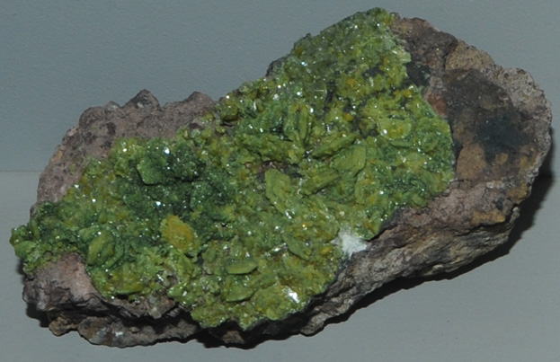

|

| PbCuAsO4(OH)
This sample of duftite is displayed in the Smithsonian Museum of Natural History. Duftite is a arsenate mineral of copper and lead with the composition PbCuAsO4(OH). The sample at left is about 10 cm across and is from Mt. Bonnie mine, Grove Hill, Northern Territory, Australia.
|